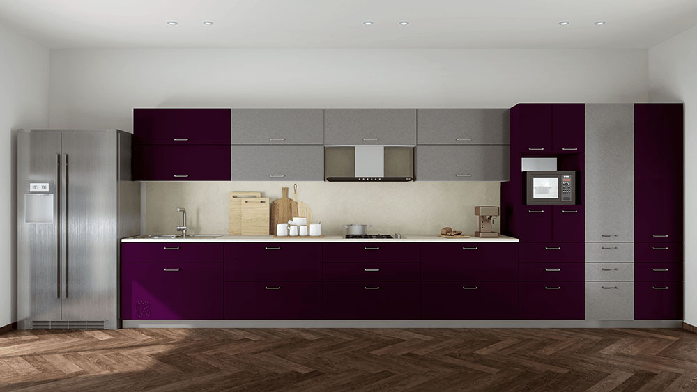
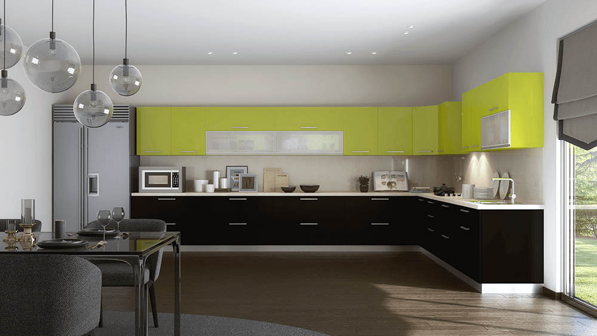
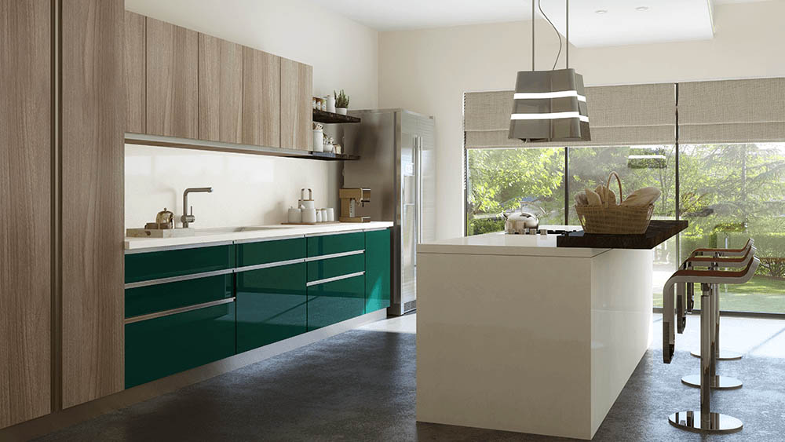

<div id="carouselExampleInterval" style="z-index: -1;" class="carousel slide" data-bs-ride="carousel">
    <div class="carousel-inner">
      <div class="carousel-item active" data-bs-interval="10000">
        
      </div>
      <div class="carousel-item" data-bs-interval="2000">
        
      </div>
      <div class="carousel-item">
        
      </div>
    </div>
   
   
  </div>

  <div class="slider-btn">
    <button class="btn-pre" type="button" data-bs-target="#carouselExampleInterval" data-bs-slide="prev">
        <span class="carousel-control-prev-icon" aria-hidden="true"></span>
        <span class="visually-hidden">Previous</span>
      </button>
      <button class="btn-next"  type="button" data-bs-target="#carouselExampleInterval" data-bs-slide="next">
        <span class="carousel-control-next-icon" aria-hidden="true"></span>
        <span class="visually-hidden">Next</span>
      </button>
  </div>
 